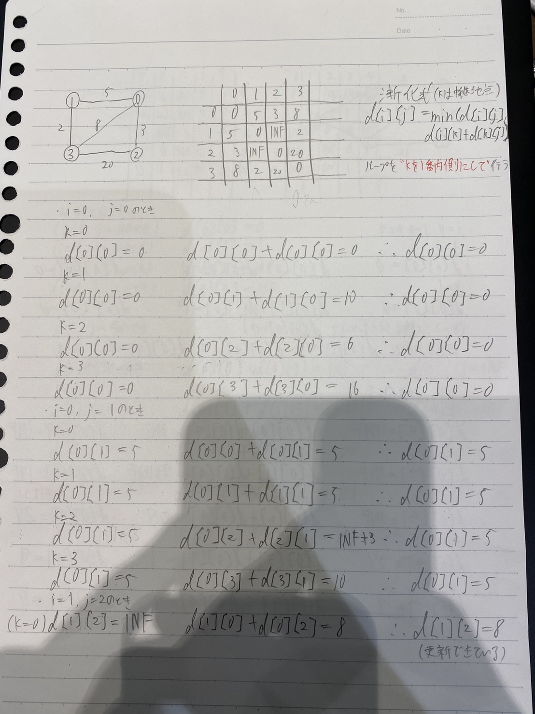
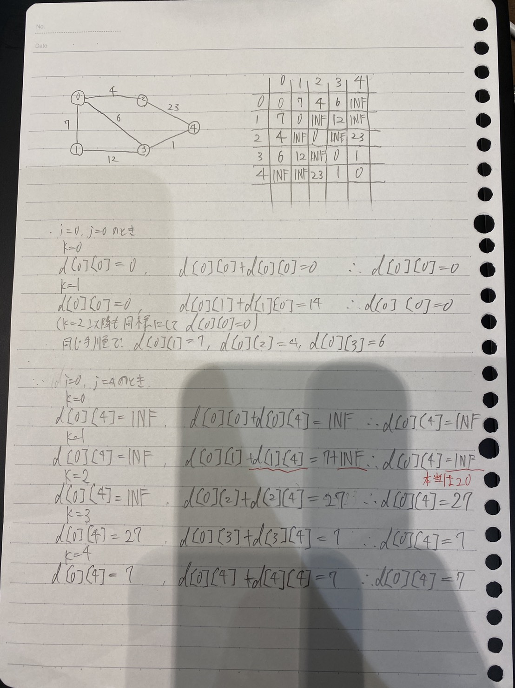

ABC12のD問題 は、頂点であるバス停の最大数が300で、3乗しても27000000なのでワーシャルフロイド法が使えそうだとわかる。
ワーシャルフロイド法とは、「始点」「終点」「中継点」を全ての頂点で求めて最短距離を求めていくDPの一種である。
実装方法がとても簡単で、以下のような単純な3重ループでできる。
for (int k = 0; k < n; k++) // 中継点
for (int i = 0; i < n; i++) // 始点
for (int j = 0; j < n; j++) // 終点
d[i][j] = min(d[i][j], d[i][k] + d[k][j]);
これについて、「中継点」をループの内側に入れても問題はないと思い、いざ提出してみるとばっちりWAが帰ってきた。 (実際の提出)
しかし、なぜ中継点をループの内側に入れてはダメなのか、直観でわからなかったので図を書いてみた。(クリックすると拡大します)
{kind=link}
まず自分が想定していたようなイメージが上の図である。
1→2(または2→1)のルートの初期値がINFで、頂点0を経由するルートで8分で行けることがわかる。
このような場合だと、中継点をループの内側にしても問題はおきない。次に、下の図は問題が起こっているが偶然答えが一致するヒヤリハットパターンである。
{kind=link}
0→4(または4→0)のルートで、中継点が1(つまりi = 0, j = 4, k = 1)のとき、本来求まっていなくてはいけない1-4がINFになっている。
なぜなら、1-4のルートは当然ながら0-4のルートよりも後で求まるものだからである。
今回はたまたま頂点3を経由する0-3-4のルートが最小であったため、最終的な解が間違いではなかったが、下の図のような場合、間違いになってしまう。
{kind=link}
この場合、0-4の最短ルートは頂点1と3を経由する0-1-3-4ルートで3分でいけるはずであるが、先述の通り1-4が非自明(INF)であるため、0-1-3-4ルートを正しく求めることができず、間違った解になってしまう。
そのため、中継点はループの内側ではいけないのである。ループの外側にしておけば、中継点と始点/終点がINFになることはなく(先に内側のループで求まっているため)間違った解になることはない。
今回の例に限らずDPの漸化式を立てるときは、比較部分に未決定の値がないかどうかちゃんと見る必要があるなぁと思いますた。